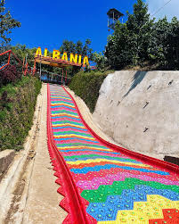
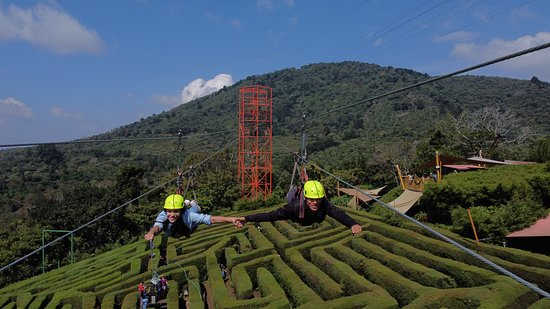
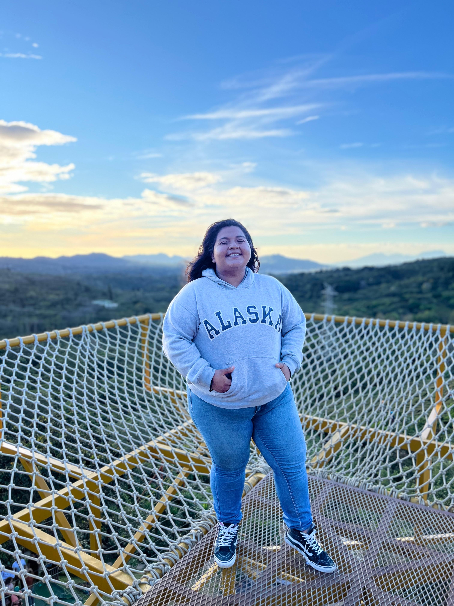
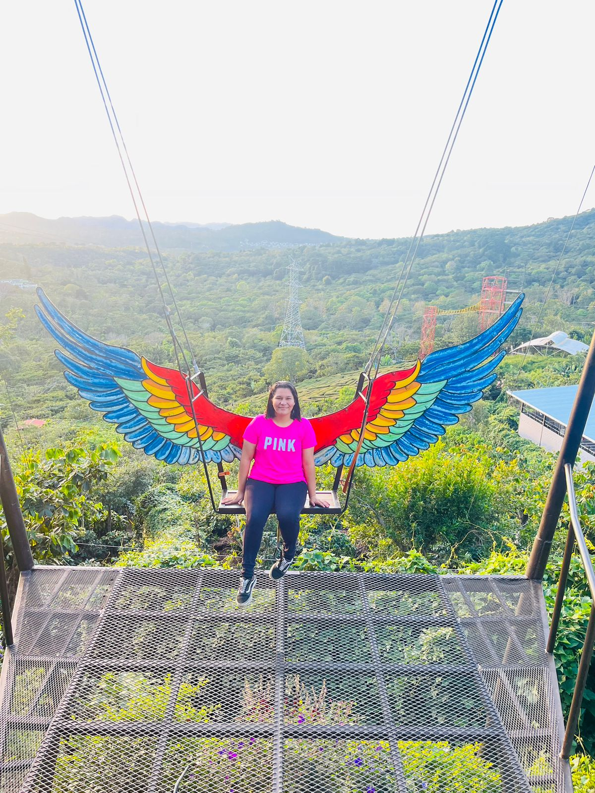
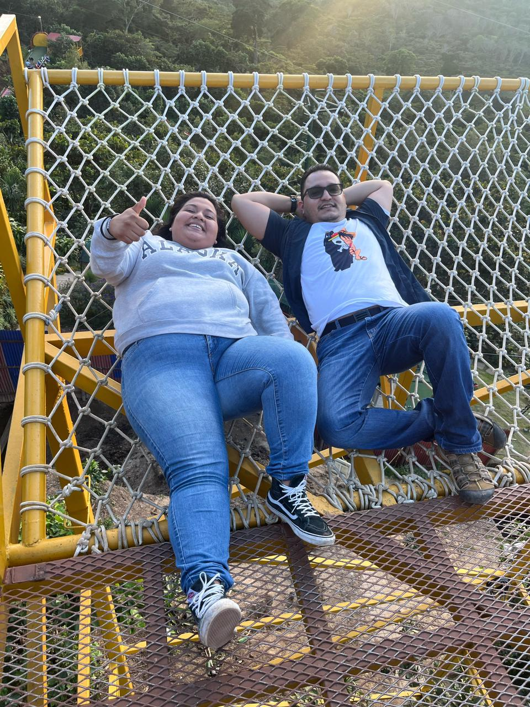
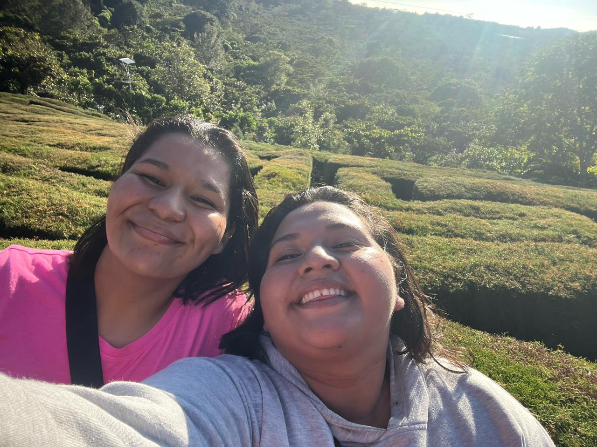

Laberinto de Albania
Apaneca, Ahuachapán Ruta de las Flores



Horario: 8:00 a.m. a 5:00 p.m.
Ubicado en el municipio de Apaneca, dentro de Café Albania, este destino nació en una finca cafetalera de seis manzanas que abrió en julio de 2017. Ofrece un clima fresco y agradable, un respiro ideal del calor tropical del país.
El laberinto de dos mil metros cuadrados comenzó hace más de diez años por iniciativa de Mauricio Arévalo. Formado por más de 2,000 cipreses, es considerado el laberinto verde más grande de El Salvador y Centroamérica.
El reto consiste en hallar el centro y luego la salida. Los tiempos varían: desde 20 minutos hasta dos horas. Es la actividad ideal para disfrutar en familia o en pareja.
Más que un laberinto:
• Tobogán gigante y canopy.
• Juegos extremos y restaurante.
• Ubicado en la famosa Ruta de Las Flores.

Mirador Puerta al Cielo
Disfruta de un hermoso atardecer. Si eres amante de la fotografía, este spot es para ti.

Péndulo Gigante
Un columpio extremo que simula caída libre. Saca tu mejor grito y experimenta la adrenalina.

Red del Mirador
Rétate a las alturas recostándote en la red mientras disfrutas de un paisaje increíble.

¡El Laberinto!
¡Pilas gente! El último en tocar la campana paga los cafés. Quien salga primero, ¡lo invitan todos!